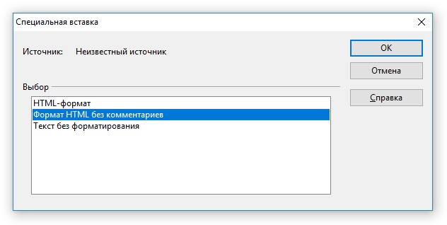

БДКГ-27. Как рассчитать протокол поверки
Открыть расчет в excelПротокол поверки
- Собрать по схеме
- Вот так это будет выглядеть:
- ПОКАЗАНИЯ БРАТЬ НЕ С БУ, А С МУЛЬТИМЕТРА, ТОЧНЕЕ БУДЕТ
- Рассчет вести можно прямо на странице, а можно воспользоваться расчетом в excel, как удобнее
- Подключиться к блоку обмена БДКГ-27 с помощью SARKtech
- Выставить на магазине сопротивлений 109 Ом:
- На блоке питания выставить такое напряжение, при котором показания мощности дозы (в SARKtech) будут равны 7 Зв/ч (примерно 4В). Для расчета значений напряжений вписать полученное напряжение в поле ввода и нажать "Рассчитать"


- Дальше идет расчет четырех точек
Точка 1
- Выставить сопротивление 109
- Выставить на блоке питание следующее напряжение:
- Снять показания мощности дозы 3 раза (SARKtech), каждый раз нажимая "Сброс"
- Записать данные в таблицу
Точка 2
- Выставить сопротивление 108
- Выставить на блоке питание следующее напряжение:

- Снять показания мощности дозы 3 раза (SARKtech), каждый раз нажимая "Сброс". Записать данные в таблицу:
Точка 3
- Выставить сопротивление 107
- Выставить на блоке питание следующее напряжение:

- Снять показания мощности дозы 3 раза (SARKtech), каждый раз нажимая "Сброс". Записать данные в таблицу
Точка 4
- Выставить сопротивление 107
- Выставить на блоке питание следующее напряжение:
- Снять показания мощности дозы 3 раза (SARKtech), каждый раз нажимая "Сброс"
- Записать данные в таблицу^
- Все данные по точкам получены, нажать
| H0 | R | H | U | % |
|---|---|---|---|---|
| 10 | 109 | |||
| 70 | 108 | |||
| 700 | 107 | |||
| 3000 | 107 |
- Расчитанную таблицу скопопастить в протокол поверки
- Открыть журнал градуировок БДКГ-27, данные ввести в следующую форму. Нажать "Расчитать".
- Расчитанную таблицу тоже скопопастить в протокол поверки (в протоколе поверки 2-е таблицы для расчета)
| Hпр | Hпр-Hф | отн | дов |
|---|---|---|---|
| 0 | 0 | 0 | 0 |
| 0 | 0 | 0 | 0 |
| 0 | 0 | 0 | 0 |
| 0 | 0 | 0 | 0 |
Чтобы вставить скопированную таблицу, нужно в свободном месте документа OOW нажать Ctrl+Shift+V, а в появившемся
меню выбрать "Формат HTML без коментариев".

Вставленную таким образом таблицу скопипастить куда надо
- В протоколе номером является номер ионизационной камеры, на неё же клеится поверочная наклейка!!!